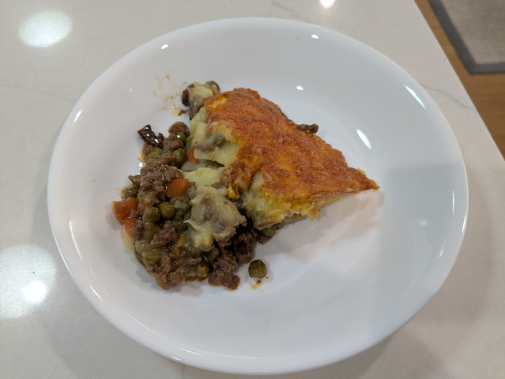

Shepherd's Pie

Ingredients
Filling
- 1½ lbs ground beef
- 1 large onions, chopped
- 3 large carrots, chopped
- 2 cloves garlic, finely chopped
- 1 lb mushrooms, sliced
- 1 tbs concentrated tomato purée (Tomato paste will substitute)
- 1 tbs tomato ketchup
- 2 tbs Worcestershire Sauce
- 1 tsp Dijon mustard
- 2 tsp dried thyme
- 1 tsp dried oregano
- 1 beef stock cube
- 1 bottle of Guinness
- 12 oz peas (or one small can)
- Salt and freshly ground pepper, to taste
Mash
- 1½ kg Vivaldi Potatoes (or other potatoes suitable for mash)
- 100 g parmesan cheese
- 25 g butter
- 2 egg yolks
- Black pepper
Directions
- Cook Mushrooms: Heat a pan with equal parts oil and butter. Sauté onions until translucent, then add mushrooms, salt, pepper, and red wine to deglaze. Cook until tender; set aside.
- Brown Beef: In a heavy pot, brown ground beef over medium heat (no extra oil needed). When some liquid renders, add garlic and cook until beef is lightly browned.
- Build Filling: Add onion and carrot, cook 5 minutes. Stir in tomato purée, ketchup, Worcestershire, Dijon, thyme, oregano, and crumble in the stock cube.
- Deglaze & Simmer: Add Guinness to deglaze. Stir in peas and mushrooms, cover, and simmer until most liquid evaporates.
- Make Mash: Boil and drain potatoes. Mash with butter and most of the Parmesan (add other cheese if desired). This can be made ahead.
- Assemble: Pour thickened filling into a roasting dish and let cool ~20 minutes. Spread mashed potatoes on top, use a fork to create ridges, and finish with remaining Parmesan and black pepper.
- Bake: Bake at 400°F for about 25 minutes until the topping is golden. Serve warm with a salad and crusty bread.
Chef's Notes
- You can also add shredded cheddar and a little melted butter to the top before baking. That will give it some good flavor and a nice color, but either or both are completely optional.
Michael Fritsche
mbf@fritsche.org